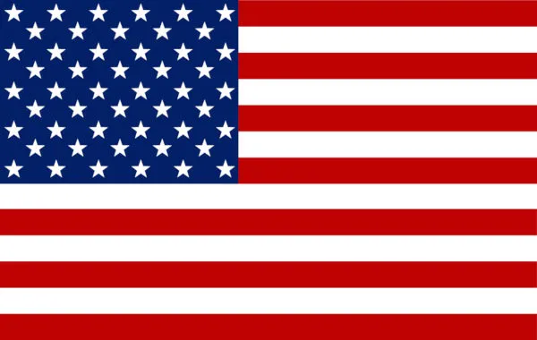

| Ano | País | Campeão | Patrocinador |
|---|---|---|---|
| 1949 |  | Slide Powers | Sidewall Shine |
| 1950 | Jack Ford | RPM | |
| 1951 | Doc Hudson | Dinoco | |
| 1952 | Doc Hudson | Dinoco | |
| 1953 | Doc Hudson | Dinoco | |
| 1954 | Lee Weathers | Leak Less | |
| 1955 | Leroy Heming | Re-Volting e Faraday Valley Dealers | |
| 1957 | Louise Nash | Sputter Stop | |
| 1958 | Junior Moon | Sputter Stop | |
| 1959 | Jack Ford | RPM | |
| 1960 | Morris Axler | Nitroade | |
| 1961 | Lee Cunningham | Mood Springs | |
| 1962 | Lee Cunningham | Mood Springsa | |
| 1963 | Spyder Dangerford | Gasprin | |
| 1964 | Morris Axler | Nitroade | |
| 1965 | Spyder Dangerford | Gasprin | |
| 1966 | Spyder Dangerford | Gasprin | |
| 1967 | Mario Andretti | Sputter Stop | |
| 1968 | Joe Allen Foyt | Cozsen | |
| 1969 | Spyder Dangerford | Gasprin | |
| 1970 | Bobby Carsac | Corrosion Seal | |
| 1971 | Strip Weathers | Jen's Diner | |
| 1972 | Thomas Tireson | Southern Gold Gasoline | |
| 1973 | Thomas Tireson | Southern Gold Gasoline | |
| 1974 | Strip Weathers | Jen's Diner | |
| 1975 | Strip Weathers | Dinoco | |
| 1976 | Kraig Shiftright | Clutch Aid | |
| 1977 | Kraig Shiftright | Clutch Aid | |
| 1978 | Alloy Wilson | Trunk Fresh | |
| 1979 | Strip Weathers | Dinoco | |
| 1980 | Dale Earnhardt | Sidewall Shine | |
| 1981 | Darrel Cartrip | Sludgee | |
| 1982 | Darrel Cartrip | Sludgee | |
| 1983 | Don Chapcar | RPM | |
| 1984 | Alloy Wilson | Trunk Fresh | |
| 1985 | Darrel Cartrip | Sludgee | |
| 1986 | Don Chapcar | RPM | |
| 1987 | Dale Earnhardt | Sidewall Shine | |
| 1988 | Bill Racelott | Texas Tea | |
| 1989 | Strip Weathers | Dinoco | |
| 1990 | Klint Shiftright | Clutch Aid | |
| 1991 | Dale Earnhardt | Sidewall Shine | |
| 1992 | Klint Shiftright | Clutch Aid | |
| 1993 | Klint Shiftright | Clutch Aid | |
| 1994 | Dale Earnhardt | Sidewall Shine | |
| 1995 | Ernie Gearson | Spare Mint | |
| 1996 | Murray Clutchburn | Sputter Stop | |
| 1997 | Strip Weathers | Dinoco | |
| 1998 | Eugene Carbureski | Tank Coat | |
| 1999 | Murray Clutchburn | Sputter Stop | |
| 2000 | Haul Inngas | Retread | |
| 2001 | Rusty Confuel | Tow Cap | |
| 2002 | Mac iCar | Apple Inc. | |
| 2003 | Dale Earnhardt Jr. | Dale Earnhardt Inc. | |
| 2004 | Strip Weathers | Dinoco | |
| 2005 | Chick Hicks | Hostile Takeover Bank | |
| 2006 | Relâmpago McQueen | Rust-eze | |
| 2007 | Relâmpago McQueen | Rust-eze | |
| 2008 | Winford Bradford Rutherford | RPM | |
| 2009 | Relâmpago McQueen | Rust-eze | |
| 2010 | Relâmpago McQueen | Rust-eze | |
| 2011 | Cal Weathers | Dinoco | |
| 2012 | Relâmpago McQueen | Rust-eze | |
| 2013 | Relâmpago McQueen | Rust-eze | |
| 2014 | Bobby Swift | Octane Gain | |
| 2015 | Relâmpago McQueen | Rust-eze | |
| 2016 | Jackson Storm | IGNTR | |
| 2017 | Cruz Ramirez | Dinoco | |
| 2018 | Cruz Ramirez | Dinoco | |
| 2019 | Jackson Storm | IGNTR | |
| 2020 | Chase Racelott | Vitoline | |
| 2021 | Cruz Ramirez | Dinoco | |
| 2022 | Tim Treadless | Nitroade | |
| 2023 | Ryan Laney | Blinkr |